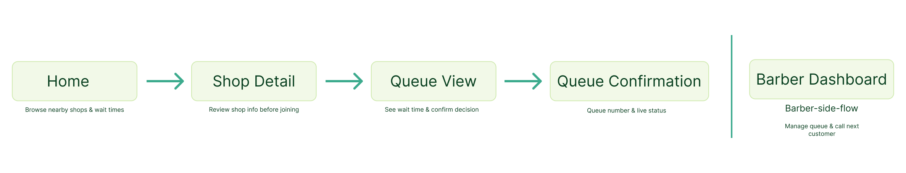

I'm Siddhartha Verma — a self-taught product designer who learns by building real things. Currently documenting my first case study: BarberQ.
Featured work


A mobile app that lets walk-in customers check live queue status and estimated wait time at barber shops — before leaving home.
How I work
About
No formal degree. Background in content creation. Taught myself Figma and spent 30 focused days doing UX the right way — real interviews, real iteration, real feedback.
BarberQ is my first case study. Built for walk-in customers in Tier 2 Indian cities who are tired of wasting time just to find out how long the wait is.
"I just keep scrolling my phone and wait — no idea how long it'll take."
— Ansh, 20 · Barber shop customer
This quote became the foundation of BarberQ.
Let's connect
I'm available for product design internships. Let's talk about what you're building.
worksid21@gmail.com →A mobile app that lets walk-in customers check live queue status and estimated wait time at barber shops before leaving home.


01 — The Problem
The Barber Shop Wait Time App helps walk-in customers in Tier 2 Indian cities check live queue status and estimated wait time at their barber shop before leaving home. It's built for people like Ansh — a 20-year-old student who visits his barber regularly but has no way of knowing the wait time without physically going there.
The problem this solves is simple: right now, finding out the wait time costs you the same time as the wait itself. This matters because in cities with limited good barbers, customers can't just switch shops — they wait, blindly, with no information.

User Flow
The app has two separate flows — one for the customer, one for the barber. Keeping them separate was a deliberate decision to avoid complexity and serve each user's single job clearly.

02 — My Research
I conducted 2 user interviews with people who regularly visit barber shops. I prepared structured questions focused on behavior and past experience rather than hypothetical feature requests. My goal was to understand how people currently deal with wait times and what coping mechanisms they've developed.
I also analyzed 2 competitor apps — Booksy and Unqueue — to understand the existing landscape. The key gap I found: no app combines live queue visibility with real-time wait estimation for walk-in customers.
03 — Key Insights
04 — My Design Process
Wireframes → Hi-Fi progression

Annotated design decisions

05 — Final Solution
The core customer flow works like this: the Home screen shows nearby barber shops with live wait times and distance at a glance. Tapping a shop opens the Shop Detail screen where Ansh sees the full picture — estimated wait, people ahead, barbers active, address, and opening hours. From there he taps Join Queue which takes him to the Queue View — where the wait time is the dominant element, displayed large and updated live. After confirming he lands on the Confirmation screen with his queue number, estimated wait, and a notification promise.
Unlike Booksy which only serves planned appointments, and Unqueue which shows walk-in options but goes silent after booking — BarberQ keeps Ansh informed from the moment he checks his phone to the moment he walks in.
Success metric: BarberQ succeeds if the queue join rate increases — meaning users who open the app actually tap Join Queue, not just check the wait time and leave.